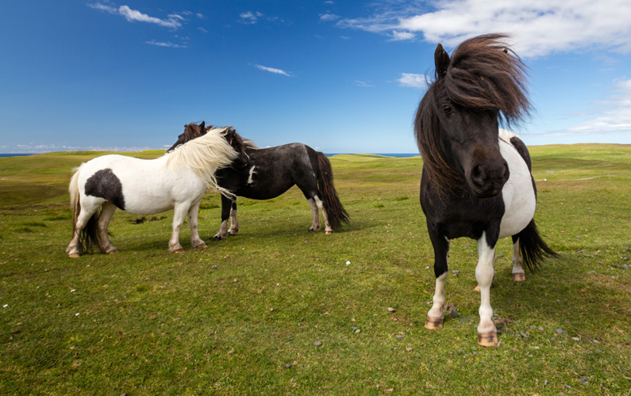
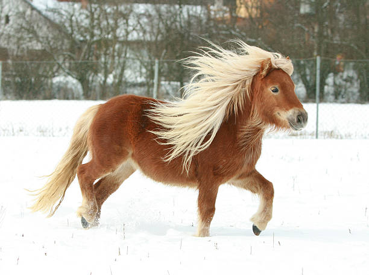

Shetlandsponnyn kommer från Shetlandsöarna och är en av de minsta hästraserna i världen. Shetlandsponnyer utmärks
av att de utstrålar vitalitet och robusthet vilket i en kombination med deras fantastiska temperament gör dem lämpade
för många olika uppgifter, bland annat som barnponny, för ridning och för körning.
Shetlandsöarna är en ögrupp om 117 öar som ligger utanför Skottland och är hemlandet för Shetlandsponnyn.
Klimatet är rått och blåsigt, på hela året finns det knappt en dag utan regn och storm. De klippiga öarna har en brant
kustlinje och under vintertid magra åkrar. Under denna tid är det ofta det enda fodret för de frigående Shetlandsponnyerna
tång och sjögräs. Det är troligt att dessa ogynnsamma jord och klimatförhållanden är det som format den tåliga och
motståndskraftiga Shetlandsponnyn. Deras uthållighet, styrka, hårrem samt brist på sporrar tyder på ett släktskap med
vildhästen, men om Shetlandsponnyns ursprung vet man inget säkert. De påträffades i stora hjordar av vikingarna vid
deras invandringar. Resenärer under medeltiden fick höra talas om dvärghästarna på Shetlandsöarna men det var först
under slutet av 40-talet som de började importeras till Sverige.
Information hämtad från Sveriges Shetlandssällskap
107 cm är högsta tillåtna mankhöjd vid 4 års ålder eller äldre och 105 cm vid 3 års ålder.
Alla färger utom tigrerad.
Huvudet skall vara litet, proportionerligt och välburet. Öronen skall vara små rättuppstående och brett
ansatta
men pekande väl framåt. Pannan skall vara bred med vakna, mörka och intelligenta ögon. Mulen
skall vara bred
med vida öppna näsborrar. Tänder och käke måste vara korrekta.
Raka fria rörelser med användande av varje led, väl följande sitt spår.
Halsen skall vara väl ansatt mot bogen, vilken i sin tur skall vara sluttande, ej stupande och sluta i en väl
markerad
manke. Kroppen skall vara stark med stort hjärtutrymme, väl välvda revben, stark och muskulös
länd. Korset skall
vara brett och långt med en väl ansatt svans.
Hovarna skall vara hårda, runda och välformade och inte korta, trånga, sammandragna eller tunna.
Hämtat från Sveriges Shetlandssällskap. Klicka på bilden för att läsa mer om shetlandsponnyns rasstandard.
